![]()
![Cipta Harmoni Lestari]()
Training internal / Cipta Harmoni Lestari
Bangun Aplikasi
Integrasi AI
dengan Claude.
Satu hari. Satu stack. Dari ide yang ditulis di kertas sampai aplikasi yang benar-benar jalan dan dimiliki tim kita sendiri.
Fastest growing real estate developer in Indonesia
Built upon trust in the eyes of our customers
Janji hari ini
Empat fitur yang kita bangun hari ini.
Bukan contoh, bukan demo. Empat-empatnya benar-benar jalan di satu alamat yang bisa dibuka dari HP siapa pun — sebelum kita pulang sore ini.
Web App
Beberapa halaman yang saling nyambung, dan datanya benar-benar tersimpan — bukan cuma tampilan.
Tanya Dokumen
Upload spesifikasi atau kontrak kita, lalu tanya isinya pakai bahasa sehari-hari. Nama tekniknya RAG.
Chatbot
Pintu masuk lain ke data yang sama — cuma bentuknya ngobrol, dan dia ingat pertanyaan sebelumnya.
Satu menu bebas
Terserah kita. Tim kita yang menentukan mau bikin apa. Bagian inilah yang kami nilai.
Semuanya jalan di akun yang kita pegang sendiri. Tidak ada akun coba-coba yang dua bulan lagi tiba-tiba menyandera data kita.
Susunan hari ini
Tiga sesi, sebelum kita mulai bikin aplikasinya.
Kenalan sama alatnya
Claude itu bukan satu benda. Ada modelnya, ada tempat kerjanya, dan kita perlu tahu kapan buka yang mana.
Kenali lapangannya
ChatGPT, Gemini, Copilot, Grok, DeepSeek. Siapa unggul di mana, dan uangnya lari ke mana.
Build aplikasinya
Sepuluh langkah: login, repo, sambung, Vercel, PRD, design, data, menu, AI, uji. Laptop dibuka, tangan di keyboard.
Sesi 1 dan 2 ada supaya Sesi 3 tidak terasa seperti sulap. Kalau kita paham cara kerja alatnya, kita bisa benerin sendiri waktu ngadat — dan pasti ada momen ngadatnya.
Kenalan dengan Claude
Modelnya, tempat kerjanya, dan beda keduanya — ini yang paling sering ketuker di minggu pertama.
Pertama, luruskan dulu
Kata "Claude" sebenarnya menunjuk dua hal yang berbeda.
Keluarga model
Anthropic bikin beberapa tingkat model: Haiku, Sonnet, Opus, Fable, Mythos. Karakternya sama; yang beda tenaga dan harganya.
Fitur / tempat kerja
Chat, Projects, Artifacts, Tasks, Cowork, Claude Code, Claude Design. Ini soal di mana kita bekerja. Tiap tempat kasih Claude "tangan" yang beda-beda.
Salah pilih fitur dampaknya jauh lebih besar daripada salah pilih model. Sayangnya kebanyakan orang malah sibuk memutar tombol yang satunya.
Model itu mesin. Fitur itu kendaraan tempat mesin itu dipasang.
Mesin yang sama, dipasang di sedan mengantar kita ke kantor. Dipasang di excavator, dia mengeruk tanah. Tidak adil menyalahkan mesin karena sedan tidak bisa mengeruk.
Versi praktisnya: kalau Claude "tidak bisa membuka file kita", itu bukan modelnya yang menolak — itu Chat, fitur yang memang tidak punya akses file. Pindah ke Cowork.
Lapis 1 · Model AI / per Juli 2026
Model AI, dari yang murah ke yang paling canggih.
Harga di atas itu tarif API per satu juta token, masuk / keluar. Token itu potongan kata — kira-kira 750 kata Bahasa Indonesia setara 1.000 token. Kalau kita pakai langganan Pro atau Max, kita tidak ditagih per token; tangga ini tetap berguna buat tahu siapa yang lagi berpikir untuk kita.
Lapis 1 · Model AI · praktiknya
Mulai dari yang murah. Naik kelas kalau ada buktinya.
Buka Sonnet
Tulis perintahnya, jalankan, baca hasilnya. Sembilan dari sepuluh kali kita sudah selesai, dengan biaya paling kecil.
Gagal dua kali
Tugas yang sama, percobaan kedua tetap gagal, dan kita bisa menyebut kenapa gagalnya. Itu tandanya pindah ke Opus — bukan karena "ini kayaknya penting".
Jumlah lebih penting
Perlu melabeli 4.000 pesan pelanggan? Pakai Haiku. Yang kita beli itu kecepatan, bukan kedalaman mikirnya.
"Pakai model paling besar terus saja" adalah kebiasaan paling boros yang bisa dibawa sebuah tim di bulan pertama. Lagi pula jadinya lambat — model besar mikirnya lebih lama.
Lapis 2 · Fitur Claude
7 fitur Claude. 7 pekerjaan yang berbeda.
Chat
Bertanya, menyusun draf, berpikir keras. Tidak punya akses apa pun kecuali kita lampirkan.
Projects
Ruangan yang punya ingatan. File dan instruksi tetap untuk satu bidang pekerjaan.
Artifacts
Hasil yang bisa dijalankan, bukan hasil yang cuma dibaca. Dokumen, aplikasi, dasbor.
Tasks & Scheduled
Kerjaan yang jalan waktu kita tidak di tempat. Harian, mingguan, atau begitu ada pemicunya.
Cowork
Claude yang punya tangan. Bisa membuka dan menulis file kita yang asli, plus aplikasi yang tersambung, lalu mengerjakannya tahap demi tahap sampai selesai.
Claude Code
Tempat kerjanya orang teknis. Menulis, memperbaiki, dan menayangkan kode — sekaligus di seluruh isi project.
Claude Design
Dari kalimat jadi prototype. Layar, alur, dan slide yang bisa diklik sebelum ada satu baris kode pun.
Fitur Claude
Chat
Halaman kosong yang bisa menjawab balik.
- Teman berpikir: menguji rencana sebelum kita keluarkan anggarannya.
- Menyusun draf: proposal, jawaban tender, berita acara serah terima, email yang sulit ditulis.
- Analisis: tempel tabel, kontrak, atau spesifikasi, lalu cecar isinya.
- Bisa cari di web dan bisa terima file — tapi cuma file yang kita kasih sendiri.
Chat tidak punya akses tetap ke komputer atau drive kita. Itu memang dirancang begitu demi keamanan. Kalau butuh akses, kita pindah fitur.
Sebutkan bentuk jawabannya
Pembaca, struktur, panjang, nada. Empat batasan ini yang mengubah jawaban umum jadi jawaban yang bisa langsung dipakai. Sesederhana itu.
Fitur Claude
Projects
Berhenti menjelaskan ulang perusahaan kita setiap pagi.
- Project knowledge — masukkan standar, daftar harga, template, dan spesifikasi yang selama ini dilampirkan berulang-ulang.
- Instruksi khusus — "kita bekerja untuk tim penjualan CHL, harga selalu dalam rupiah, jangan pernah menjanjikan tanggal serah terima".
- Bisa dibagikan ke tim — satu orang menyiapkannya dengan benar, semua orang ikut menikmati.
- Tiap obrolan baru di dalam project langsung mulai dengan bekal yang lengkap.
Satu project per fungsi lebih baik daripada satu project per orang. Misalnya "Sales & Marketing", "Project Control", "Legal & Perizinan", "Serah Terima & After-Sales".
| Nama | Sales & Marketing — CHL |
| Isi | Daftar harga, spesifikasi unit, syarat promo, redaksi baku SPK, kumpulan pertanyaan dari 200 calon pembeli terakhir |
| Instruksi | Pakai Bahasa Indonesia kecuali diminta lain. Jangan mengarang ketersediaan unit. Tandai apa pun yang perlu ditinjau legal. |
| Pemilik | Satu orang dengan nama yang jelas, tugasnya menjaga isinya tetap terbaru |
Project tanpa pemilik akan basi dalam enam minggu. Tunjuk orangnya sejak hari pertama.
Fitur Claude
Artifacts
Waktu yang kita butuhkan itu barangnya, bukan penjelasan tentang barangnya.
Aplikasi hidup
Kalkulator, formulir, atau dasbor yang langsung bisa dipakai di panel jawaban. Diklik, bukan dibaca.
Dokumen
Naskah panjang yang tidak ikut hilang waktu percakapannya ditutup, dan bisa diedit per bagian.
Punya versi
"Ubah grafiknya jadi bertumpuk, buang Q1" — dia meng-edit di tempat, bukan mengulang dari nol.
Tinggal kirim link
Tinggal terbitkan link-nya. Rekan kita pakai alatnya tanpa perlu tahu perintah apa yang kita tulis.
"Buatkan simulator KPR interaktif untuk unit Rp 850 juta — ada slider DP, tenor, bunga, dan hasil cicilan bulanan." Satu kalimat, satu artifact, dan itu sudah jadi alat jualan yang nyata.
Fitur Claude
Tasks & Scheduled
Dari "aku tanya, dia jawab" jadi "dia sudah selesai waktu aku tidur".
- Kasih tujuannya saja, bukan langkah teknisnya. Claude yang menyusun rencana, memecahnya, lalu mengerjakannya.
- Jadwalkan: setiap hari kerja pukul 07.00, setiap Senin, atau setiap akhir bulan.
- Pekerjaannya berjalan di server Anthropic — laptop ditutup pun tugasnya jalan terus.
- Kita balik ke meja, hasilnya sudah jadi, lengkap dengan rujukan ke file sumbernya.
| Kapan | Tugasnya |
|---|---|
| Hari kerja 07.00 | Rangkum laporan lapangan kemarin jadi satu daftar — cukup yang melesetnya saja. |
| Senin 08.00 | Tarik prospek minggu lalu, kelompokkan berdasarkan alasan penolakan, tandai tiga teratas. |
| Akhir bulan | Cocokkan progress claim dengan jadwal, lalu jelaskan kenapa ada selisihnya. |
Ketiganya laporan yang sekarang masih dikerjakan manual oleh seseorang tiap Senin pagi.
Fitur Claude
Cowork
Claude yang diberi izin menyentuh file kita yang sebenarnya.
- Kita tunjukkan foldernya. Dia membaca, meng-edit, dan membuat file di situ — tanpa upload, tanpa salin-tempel.
- Tersambung ke aplikasi yang sudah kita pakai: Drive, Gmail, Slack, SharePoint, Notion, Calendar.
- Dia mengerjakan tahap demi tahap sampai jadi hasil nyata, dan selalu menyebut file mana yang dipakai.
- Jalan di aplikasi desktop; versi web dan mobile masih beta. Kita bisa mengarahkannya dari HP.
Beri dia folder yang terbatas, jangan seluruh drive. Sama seperti kita mengatur akses kontraktor baru ke area proyek.
Chat memberi tahu caranya mengerjakan.
Cowork mengerjakannya.
Contoh nyata. Satu folder berisi 180 nota dan formulir reimbursement hasil scan. Chat bisa menjelaskan prosedur yang baik. Cowork membuka satu per satu, membaca nominalnya, menyusun spreadsheet-nya, menandai empat yang tidak cocok, lalu meninggalkan hasilnya di folder itu.
Fitur Claude
Claude Code
Tempat kerja yang akan membangun aplikasi kita siang nanti.
- Kerjanya di seluruh isi project, bukan satu file — dibaca dulu semuanya, baru menulis.
- Jalankan, baca pesan errornya, perbaiki, coba lagi — satu putaran itu dia yang lakukan sendiri.
- Ada di browser lewat claude.ai/code — itu yang kita pakai hari ini, tanpa memasang apa pun. Tersedia juga di terminal, VS Code / JetBrains, dan aplikasi desktop.
- Bisa menyimpan perubahan (commit), bikin cabang kerja (branch), dan mengajukan perubahan langsung ke GitHub.
Claude Code tempat kita menambah menu. Claude Design tempat kita memutuskan menu. Jangan dibalik.
Kita memeriksa perubahannya. Peran kita penyetuju, bukan juru ketik.
Fitur Claude
Claude Design
Ceritakan, klik, lalu perdebatkan — sebelum ada yang menulis kode.
- Dari kalimat jadi prototype: layar, alur, slide, dan lembar ringkas yang benar-benar bisa diklik.
- Revisinya lewat ngobrol, tempel komentar di layarnya, edit langsung, atau geser slider yang dibuatkan Claude.
- Dia bisa belajar panduan tampilan kita — warna, huruf, dan komponennya langsung dipakai otomatis.
- Hasilnya tinggal dilempar ke Claude Code buat dibangun — tanpa salin-tempel.
Berdebat soal layar yang bisa dilihat cuma makan waktu beberapa menit. Berdebat soal layar yang terlanjur dibangun makan waktu berhari-hari.
Kunci daftar menunya
Begitu kita keluar dari Claude Design, seluruh anggota tim harus menjawab sama untuk pertanyaan: aplikasi ini punya layar apa saja?
Menambah menu belakangan di Claude Code itu murah. Yang mahal adalah tiga orang membangun dengan tiga bayangan produk yang berbeda di kepalanya.
Lapis 2 · Fitur Claude · penyesuaian
Lima pengaturan yang jarang orang buka.
Styles
Ajarkan gaya bahasa kantor sekali saja. Resmi untuk klien, lugas untuk internal.
Preferences
Aturan tetap yang ikut ke semua percakapan. Peran kita, kebiasaan kita, hal yang kita tidak suka.
Memory
Dia ingat obrolan sebelumnya, jadi kita berhenti mengulang cerita dari awal. Bisa dimatikan.
Skills
Prosedur kantor yang bisa dipakai ulang — format laporan kita, aturan penamaan kita — dipanggil pas dibutuhkan.
Connectors
Sambungan ke Drive, GitHub, Notion, M365, dan sistem internal. Ini pintu masuknya ke data kita.
Sisihkan dua puluh menit buat menulis Preferences dengan benar. Satu perubahan itu memperbaiki semua jawaban yang akan kita terima, selamanya.
Lapis 2 · Fitur Claude · titik masuk
Dia yang datang ke meja kita, bukan kita yang mendatanginya.
Claude in Excel
Rumus, pembersihan data, model perhitungan — di dalam file yang sudah kita buka.
Claude in PowerPoint
Ubah kerangka kasar jadi deck yang rapi tanpa keluar dari filenya.
Claude in Chrome
Membaca halaman yang sedang kita buka, mengisi formulir, menyelesaikan tugas di web bersama kita.
Word & Outlook
Menulis dan meng-edit di Word; menyortir inbox dan menyusun balasan di Outlook.
@Claude di Slack
Panggil dia masuk ke thread, dan serahkan tugasnya di tempat obrolannya berlangsung.
iOS & Android
Memulai dan mengarahkan pekerjaan panjang dari lapangan, bukan dari meja.
Lapis 2 · Contekan
Kalau cuma boleh ingat satu slide, ingat yang ini.
| Kita mau… | Buka | Alasannya |
|---|---|---|
| Berpikir, menyusun draf, atau bertanya | Chat | Paling cepat. Tanpa persiapan apa pun. |
| Mengerjakan topik yang sama tiap minggu | Projects | Konteks tetap, jadi tidak perlu briefing ulang tiap hari. |
| Dapat hasil yang bisa langsung diklik | Artifacts | Hasilnya alat, bukan penjelasan tentang alat. |
| Mengolah file di komputer kita | Cowork | Satu-satunya fitur yang punya akses file sungguhan. |
| Sesuatu berjalan tanpa kita | Scheduled tasks | Kerjaan yang itu-itu terus tidak perlu menunggu ada orang yang mengklik. |
| Memutuskan bentuk produknya | Claude Design | Selama kodenya belum ada, mengubahnya masih murah. |
| Membangun dan merilis aplikasinya | Claude Code | Paham seluruh isi project, dan bisa uji-coba sendiri sampai jalan. |
Peta persaingannya
Cepat atau lambat akan ada atasan yang bertanya, "kenapa tidak pakai ChatGPT saja?" Ini jawaban jujurnya, termasuk bagian yang tidak menguntungkan kita.
Cek fakta / pangsa kunjungan web, Mei 2026
Claude bukan pemimpin pasar. Jauh dari itu.
Data Similarweb, dihitung dari kunjungan web tujuh asisten terbesar. Pemakaian lewat aplikasi HP menambah 15–60% lagi, tergantung produknya, jadi anggap ini gambaran kasar, bukan papan skor.
Angkanya memang masih kecil, tapi naiknya curam. ChatGPT turun dari 79% ke 53,9% dalam dua belas bulan — bukan karena mengecil, tapi karena yang lain tumbuh mengelilinginya.
Kesimpulan yang berguna buat CHL: pasarnya sedang terpecah, jadi jangan menikah dengan satu vendor. Bangun sistem yang modelnya bisa diganti.
Siapa membuat apa
Delapan nama yang sebaiknya kita kenali.
ChatGPT
Keluarga GPT-5.6. Serba bisa dan paling dikenal orang. Pilihan plugin, gambar, dan custom GPT-nya paling banyak.
Gemini
Paling nempel di mana-mana: Workspace, Android, dan Search. Paket gratisnya juga paling royal.
Claude
Spesialis kerja teliti. Paling kuat untuk codebase besar, dokumen panjang, dan tugas panjang yang jalan sendiri.
Copilot
Kuat karena sudah terpasang di mana-mana, bukan karena modelnya. Kalau kantor kita hidup di M365, dia sudah nongkrong di situ.
Grok
Grok 4.5, fokus ke koding dan harganya berani murah. Nempel di X.
DeepSeek V4
Model terbuka kelas atas, harganya sekitar seperdelapan. Bisa dipasang di server sendiri — itu yang bikin dia relevan buat kita.
Perplexity
Yang diutamakan pencarian, dan jawabannya selalu disertai sumber. Lebih pas disebut alat riset.
Llama / Muse
Model terbuka yang bikin "pasang sendiri di server kantor" jadi hal biasa.
Kemampuan, per jenis pekerjaan
Tidak ada yang menang di semua baris.
| Pekerjaannya | Claude | ChatGPT | Gemini | Catatan |
|---|---|---|---|---|
| Kode besar, rombak ulang | Terkuat | Bagus | Bagus | Claude jadi mesin di balik sebagian besar alat koding yang serius. |
| Tulisan yang tidak terasa AI | Terkuat | Bagus | Cukup | Paling nurut waktu diminta pakai nada bahasa tertentu. |
| Gambar, suara, video | Terlemah | Terkuat | Kuat | Ini alasan aplikasi kita memanggil OpenAI untuk urusan gambar. |
| Pencarian web langsung | Bagus | Kuat | Terkuat | Google punya mesin pencarinya sendiri — susah dikejar di baris ini. |
| Integrasi Office / Workspace | Bagus | Kuat | Terkuat | Tergantung kantor kita sudah langganan yang mana. |
| Harga untuk kemampuan setara | Sedang | Sedang | Sedang | DeepSeek menang telak — sekitar ⅛ harga untuk keluaran yang sama. |
| Tugas panjang yang jalan sendiri | Terkuat | Bagus | Cukup | Ini yang bikin membangun aplikasi dalam sehari jadi masuk akal. |
Diringkas dari berbagai uji banding publik dan survei developer sampai pertengahan 2026. Yang di puncak berganti tiap beberapa bulan, tapi pola kekuatannya sudah stabil lebih dari setahun.
Ikuti uangnya
Kemampuannya sudah mirip. Harganya belum.
Empat model papan atas sekarang cuma beda empat poin di soal sains tingkat S3. Tapi di tagihan, jaraknya jauh lebih lebar dari empat poin.
- Model terbuka dengan harga jauh lebih murah sekarang benar-benar cukup untuk sebagian besar pekerjaan rutin.
- Model kelas atas baru terasa sepadan di 10% pekerjaan yang sulit — tugas panjang, konteks besar, masalah yang belum jelas bentuknya.
- Yang paling terbukti hemat itu bertingkat: pakai yang murah dulu, naik kelas cuma kalau gagal.
Taruh pilihan modelnya di satu tempat saja — satu baris setelan. Kalau harga atau juaranya berganti — dan itu terjadi dua kali setahun — kita cukup mengubah satu baris.
| Model | Input | Output |
|---|---|---|
| Haiku 4.5 | $1 | $5 |
| Sonnet 5 | $3 | $15 |
| Opus 5 | $5 | $25 |
| Fable 5 | $10 | $50 |
Dua tombol hemat yang jarang dipakai orang: prompt caching — menyimpan bagian perintah yang selalu diulang — memangkas biayanya sampai 90%, dan Batch API memotong 50% untuk pekerjaan yang tidak buru-buru.
Jadi, kenapa Claude hari ini?
Karena pekerjaannya, bukan karena mereknya.
Kita sedang menulis kode
Tugas hari ini: aplikasi yang isinya banyak file, dibangun sekali duduk. Di jenis pekerjaan inilah jarak Claude dari yang lain paling lebar dan paling konsisten.
Tempat kerjanya nyambung
PRD, prototype, dan pembangunannya ada di satu keluarga produk yang sama. Makin sedikit serah terima antar alat, makin sedikit tempat buat kehilangan alur.
Ingatannya panjang
Pembangunan delapan jam butuh alat yang masih ingat keputusan yang kita ambil pukul 09.30.
Untuk membuat gambar, nanti siang kita justru memanggil OpenAI, karena di situlah kekuatannya. Pakai alat terbaik untuk tiap pekerjaan. Setia pada satu vendor itu bukan strategi. Yang strategi itu: gampang diganti.
Build day
Sepuluh langkah, berurutan. Dari login sampai semua menu selesai diuji. Jangan dilompati — tiap langkah menyiapkan bahan untuk langkah sesudahnya. Laptop dibuka mulai dari sini.
Sebelum langkah 01 · Gambaran besar
Yang kita bangun hari ini, bentuknya begini
Orang cuma memegang kotak paling kiri. Semua kotak lain dipanggil dari kotak tengah — tidak ada satu pun yang dipanggil langsung dari browser. Itu sebabnya kunci API aman, dan itu juga sebabnya kalau ada yang error, yang kita periksa duluan selalu kotak tengah.
Sebelum langkah 01 · Cara mereka ngobrol
Lima kotak tadi ngobrolnya pakai apa?
Gampangnya, bayangkan restoran. Semua istilah teknis di kanan itu cuma nama lain dari orang-orang di bawah ini.
Tempat tamu duduk dan melihat menu. Cantik, tapi tidak ada dapur di sini — semua permintaan dititipkan ke pelayan.
Bolak-balik bawa pesanan ke dapur dan bawa piring ke meja. Pesanannya ditulis dengan format baku (JSON), bukan diteriakkan sesuka hati.
Semua diolah di sini. Tamu tidak pernah masuk dapur, dan resep rahasia — alias kunci API — juga tidak pernah keluar dari sini.
Gudang catatan itu Postgres, gudang barang itu Blob. Chef tamu itu OpenAI — dipanggil kalau perlu, dan dibayar per pesanan.
| Dari → ke | Ngobrolnya pakai |
|---|---|
| Browser → Server | REST API lewat HTTPS. Halaman memanggil fetch('/api/chat'), kirim JSON, terima JSON. |
| Server → Postgres | Koneksi SQL. Alamat sambungannya ada di DATABASE_URL — perintahnya SELECT, INSERT, dan kawan-kawan. |
| Server → Blob | SDK Blob (di dalamnya juga REST). Izinnya dari BLOB_READ_WRITE_TOKEN. |
| Server → OpenAI | REST API + kunci. Kirim teks, terima jawaban. Ditagih per pemakaian, jadi tiap panggilan ada harganya. |
| Browser → OpenAI | Tidak ada jalurnya — sengaja. Kalau browser bisa memanggil OpenAI langsung, kuncinya ikut kelihatan di layar orang lain. |
"API" itu cuma cara dua program saling menitip pesan. Bukan barang, bukan aplikasi — cuma alamat yang bisa dipanggil, plus kesepakatan soal bentuk pesannya.
Sebelum langkah 01 · Tempat pengetahuan
Dokumen kita sebenarnya disimpan di mana?
Vercel Blob
PDF-nya tetap utuh di sini, persis seperti yang diunggah. Postgres cuma menyimpan alamatnya — satu baris teks di kolom blob_url. Ini alasan kita tidak pernah menjejalkan file ke dalam database.
Neon Postgres
Teksnya ditarik keluar, dipotong 500–1.000 token, lalu tiap potongan disimpan bareng vektornya — angka-angka yang mewakili maknanya. Ini yang bikin "cari yang mirip artinya" jadi mungkin, bukan cuma "cari kata yang sama".
Di dalam pertanyaan
Begitu ada yang bertanya, 3–5 potongan paling nyambung ditempel di depan pertanyaan, baru dikirim ke model. Selesai dijawab, tempelan itu hilang. Model tidak menyimpan apa pun.
"Berarti dokumen kita masuk ke OpenAI, dong?" — Yang dikirim cuma potongan yang relevan dengan pertanyaan saat itu, bukan seluruh isi gudang. Dokumen aslinya tidak pernah pindah dari Blob dan Postgres milik kita sendiri.
Sebelum langkah 01 · Pembagian kerja
Dari gambar tadi, Claude bikin yang mana?
| Kotaknya | Yang ditulis Claude Code |
|---|---|
| Browser | Halaman dan komponennya — app/knowledge/page.tsx, tombol upload, tabel, kotak chat. |
| Server aplikasi | Pintu-pintu API — app/api/upload/route.ts, app/api/chat/route.ts. Di sinilah semua logikanya tinggal. |
| Postgres | db/schema.sql (tabelnya) dan lib/db.ts (cara memanggilnya). Kita yang menjalankan schema-nya sekali di Neon. |
| Blob | lib/blob.ts — simpan file, ambil alamatnya, kembalikan ke Postgres. |
| API model | lib/ai.ts — satu file, satu tempat. Ganti penyedia cukup di sini, bukan di seluruh aplikasi. |
| Sambungannya | Kode yang membaca process.env, plus .env.example dan README biar orang berikutnya tidak menebak. |
Kalau kita diam, Claude tetap jalan — tapi dia memilih sendiri, dan tiap menu bisa dapat bentuk yang beda. Menyebut enam baris di atas sekali di awal jauh lebih murah daripada merapikan lima menu di sore hari.
Akun GitHub, project Vercel, database Neon, Blob, dan kunci API — semua itu kita yang klik. Claude menulis kode yang memakai layanan itu; dia tidak bisa mendaftarkannya untuk kita.
Sebelum langkah 01 · Jalur perubahan
Kita ngetik satu kalimat, kok bisa langsung tayang?
Buru-buru refresh begitu Claude bilang "sudah di-push", lalu menyimpulkan perbaikannya gagal — padahal yang dibuka masih versi lama. Push ≠ tayang. Tunggu baris teratas di tab Deployments berstatus Ready dulu, baru buka aplikasinya.
Alurnya
Seluruh hari ini dalam satu layar.
Prasyarat
Empat hal disiapkan sendiri. Sisanya kami yang urus.
Database, storage, alamat publik, dan API key sudah diurus. Tidak ada server yang dipasang, tidak ada Docker, tidak ada kredensial yang diketik manual — Vercel menempelkannya sendiri. Di hari H kita cukup sambungkan, lalu tinggal nyuruh.
Poin terakhir yang paling menentukanTim yang datang membawa masalah nyata — tunggakan serah terima unit, dokumen vendor yang berantakan, prospek yang tidak pernah ditindaklanjuti — akan selesai. Tim yang datang untuk "belajar AI" akan membuat aplikasi to-do list dan melupakannya hari Jumat.
Langkah · Claude
Login dulu, sebelum apa pun
- 1 · Buka browser. Chrome atau Edge, laptop apa pun. Tidak ada yang perlu dipasang.
- 2 · Masuk ke claude.ai dan login dengan akun Claude Max kelompok. Satu akun dipakai satu kelompok, satu orang yang memegang.
- 3 · Pastikan paketnya benar. Buka Settings → Plan, harus tertulis Max. Kalau masih Pro atau gratisan, jatah pemakaian habis sebelum tengah hari dan pekerjaan berhenti di tengah jalan.
- 4 · Satu login, tiga tempat kerja. Chat untuk menulis PRD, Design untuk tampilannya, Code untuk membangun — semuanya tab di browser yang sama.
- 5 · Beresin urusan login sekarang — verifikasi email, kode dua langkah, password yang lupa. Lima menit di awal, atau satu jam di tengah hari.
Satu kelompok bisa menonton layar yang sama, tidak ada beda versi antar laptop, dan jam pertama tidak habis untuk memasang apa pun.
Cuma laptop, browser, dan koneksi. Sisanya sudah menyala di sisi kami.
Langkah · GitHub
Akun, repo, dan hak aksesnya
- Repo itu gudang kode satu project — semua file, plus catatan siapa mengubah apa dan kapan. Satu aplikasi, satu repo.
- 1 · Daftar di github.com pakai email kantor, lalu klik verifikasi yang dikirim ke email itu. Yang sudah punya akun tinggal login — pastikan benar-benar bisa masuk.
- 2 · Tekan New → nama repo chl-[proyek] → pilih Private → centang Add a README → Create repository.
- 3 · Settings → Collaborators → undang satu rekan setim dengan akses Write. Repo jangan menggantung di satu orang.
- 4 · Branch utamanya main. Kerjaan baru dikerjakan di cabang lain dulu, digabung ke main kalau sudah jalan.
- 5 · Hak akses untuk Claude diatur di langkah 03. Dari situlah Claude nanti bisa pull, commit, push, dan merge ke repo ini.
Tidak ada kredensial di dalam repo. Password dan API key tinggal di .env, dan .env masuk .gitignore — diperiksa sebelum push pertama, bukan sesudahnya.
Nama repo dipakai seharian — di Claude Code, di alamat Vercel, dan di obrolan antar tim. Pilih yang pendek dan bisa diucapkan.
Album · Layar nyata · Langkah 02
Membuat repo — dan satu centang yang terlewat
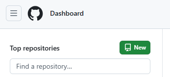
Dari dashboard GitHub, tombol hijau New di sebelah "Top repositories".
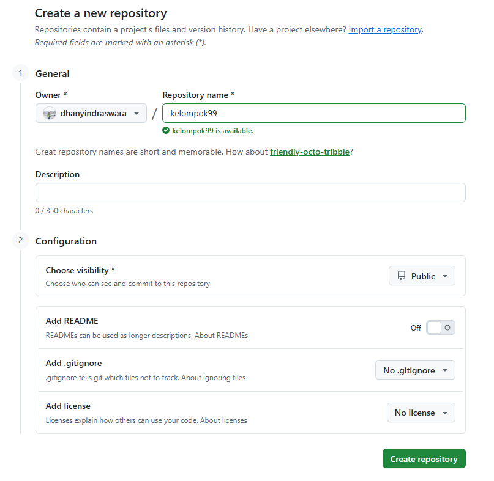
Add README masih Off. Justru ini yang bikin repo-nya lahir benar-benar kosong — dan beberapa menit kemudian Vercel menolaknya.
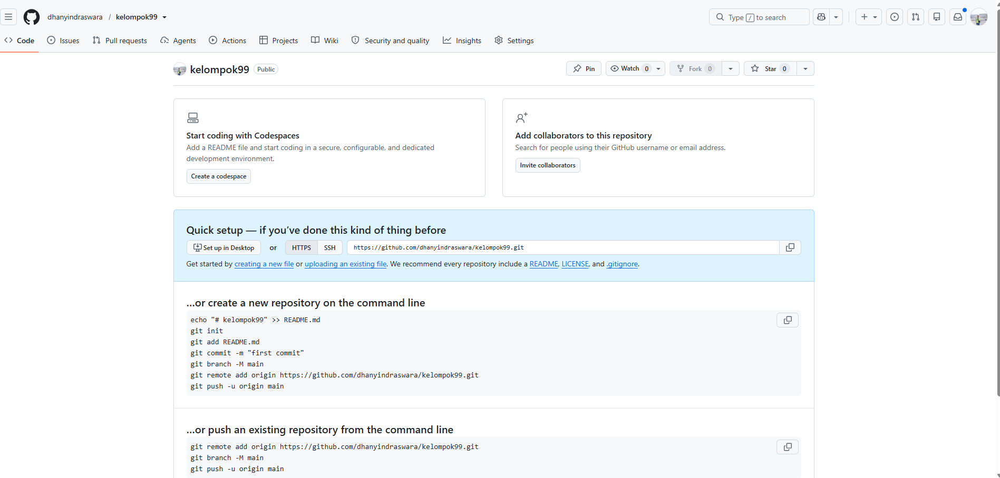
Layar Quick setup. Klik creating a new file, buat README.md, commit — repo pun berisi.
Beda antara hari yang lancar dan sepuluh menit kebingungan cuma satu toggle kecil di layar tengah. Nyalakan Add README sejak awal, dan macet pertama tidak pernah terjadi.
Langkah · Sambungan
Sambungkan Claude ke GitHub
- 1 · Buka Claude Code di browser, lalu pilih Connect GitHub.
- 2 · Di halaman GitHub yang terbuka, tekan Authorize, lalu pilih repository mana yang boleh diakses — cukup repo kelompok kita, tidak perlu semuanya.
- 3 · Berikan akses baca dan tulis. Tanpa akses tulis, Claude cuma bisa membaca kodenya — tidak bisa menyimpan, mengirim, atau mengajukan perubahan.
- 4 · Kembali ke Claude Code, pilih repo chl-[proyek] dan branch main untuk sesi ini.
- 5 · Uji sambungannya sekarang pakai prompt di kanan. Jangan menunggu sore baru tahu sambungannya belum jadi.
Biasanya izinnya cuma diberikan ke sebagian repo. Buka GitHub → Settings → Applications → Claude, tambahkan repo kelompok, lalu muat ulang Claude Code.
Buka github.com dan lihat sendiri. Kalau branch dan filenya ada di sana, tiga langkah pertama beres. Kalau belum, berhenti dulu — jangan menumpuk pekerjaan di atas sambungan yang belum jadi.
Langkah · Publikasi
Alamatnya hidup sebelum ada isinya
- 1 · Buka vercel.com → Continue with GitHub. Tidak ada password baru — akun GitHub dari langkah 02 yang dipakai.
- 2 · Add New → Project → pilih repo chl-[proyek]. Next.js dikenali sendiri; jangan ubah setelan apa pun.
- 3 · Deploy, tunggu hijau. Repo masih hampir kosong — memang itu maksudnya.
- 4 · Buka alamatnya dari HP, bukan cuma dari laptop yang membangun.
- 5 · Mulai detik ini tiap push otomatis tayang. Tidak ada lagi langkah publikasi di sore hari.
Diuji waktu repo masih kosong, tidak ada kode yang bisa disalahkan kalau gagal. Ditunda ke sore, kita jadi menguji dua hal sekaligus persis waktu tenaga sudah habis.
- Tidak ada workflow GitHub Actions yang ditulis
- Tidak ada base path yang diperbaiki
- Tidak ada server yang dipasang atau di-restart
- Tidak ada perintah deploy yang diketik
Tiap branch dapat alamat uji cobanya sendiri. Jadi kita bisa mencoba perubahan tanpa merusak alamat utama yang sedang dibuka orang lain.
Album · Layar nyata · Langkah 04
Dari repo ke alamat publik, empat layar
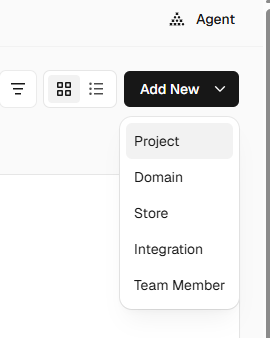
Di dashboard Vercel: Add New → Project.
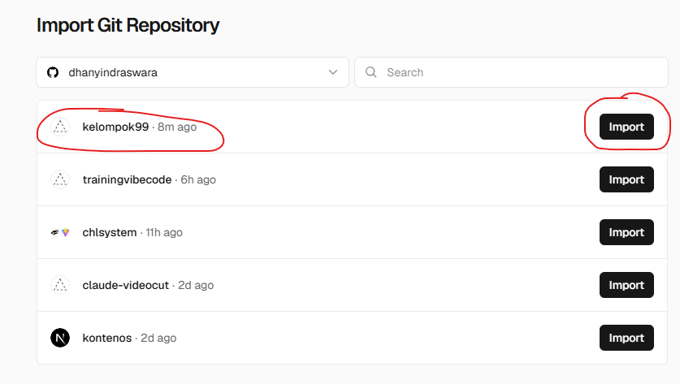
Repo GitHub muncul sendiri karena login memakai Continue with GitHub.
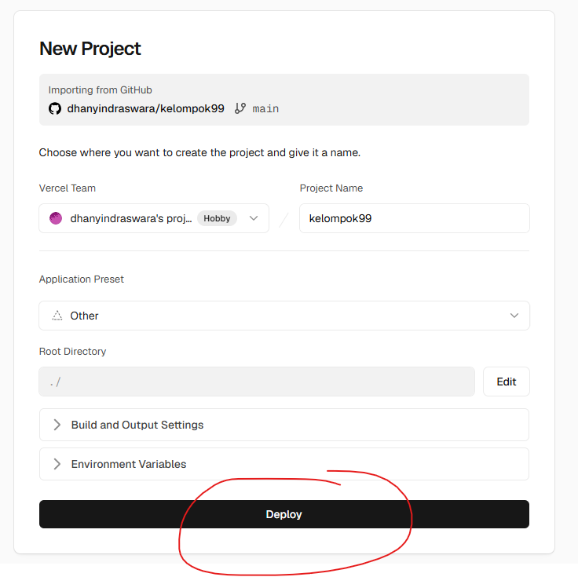
Application Preset: Other. Tebakan inilah yang nanti nyari folder public dan bikin build-nya gagal.
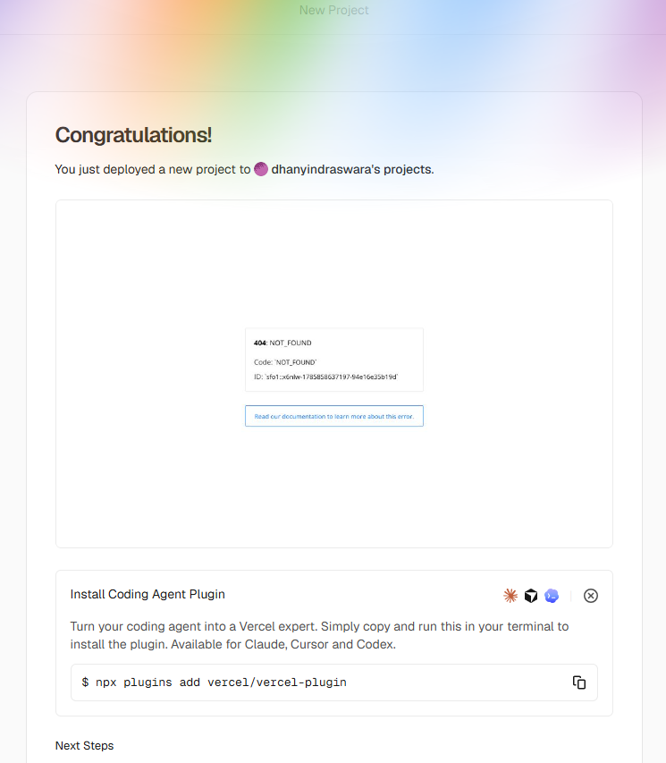
Alamat publik menyala. Isinya 404 — memang begitu, repo baru berisi README.
Halaman 404 itu bukan kegagalan — itu bukti bahwa jalur GitHub → Vercel sudah tersambung dan bekerja. Mulai detik itu, setiap push tayang otomatis tanpa satu perintah pun.
Langkah · Claude Chat
Tulis PRD-nya
- PRD itu apa? Product Requirements Document — dua halaman yang menjawab satu hal: aplikasi ini buat siapa, dan harus bisa apa saja.
- Lampirkan contoh PRD dulu. Model meniru bentuk yang kita tunjukkan. Tunjukkan yang bagus, hasilnya bagus.
- Sebutkan stack-nya di dalam PRD — daftar alat yang dipakai. Next.js di Vercel, Vercel Postgres, Vercel Blob. Ditulis, bukan diasumsikan.
- Dokumen ini jadi batasan untuk Claude Design. Design tidak boleh mengarang cakupan yang tidak ada di sini.
- Cukup dua halaman. PRD yang tidak pernah dibaca ulang cuma jadi hiasan.
45 menit. Kalau jam 11.00 kita masih menulis PRD, artinya kita sedang mendesain lewat dokumen, bukan lewat prototype.
Langkah 04 · Standar mutu
Beda PRD yang jadi kode dan yang jadi wacana.
| Bagian | Lemah — bikin melenceng | Kuat — bikin jadi kode |
|---|---|---|
| Masalah | "Meningkatkan komunikasi dengan pelanggan." | "Staf penjualan menjawab 12 pertanyaan unit yang sama lewat WhatsApp, 40 kali sehari, dari daftar harga yang sudah tertinggal 3 versi." |
| Pengguna | "Pengguna internal dan eksternal." | "Admin penjualan (mengisi), agen penjualan (membaca di HP), manajer pemasaran (menyetujui)." |
| Layar | "Dasbor dan halaman lainnya." | "Login · Daftar unit · Detail unit · Upload dokumen · Tanya dokumen · Chat · Pengaturan admin. Tujuh. Itu daftarnya." |
| Data | "Menyimpan data yang relevan." | "units, documents, chunks, conversations, users. Di Postgres. File di Blob, alamatnya disimpan di documents.blob_url." |
| Selesai berarti | "Sistem berjalan dengan baik." | "Agen meng-upload spesifikasi 30 halaman lalu mendapat jawaban benar beserta sumbernya untuk 'berapa tinggi plafon tipe 45' dalam kurang dari 10 detik." |
Serahkan PRD kita ke tim lain tanpa menjelaskan apa pun. Kalau yang mereka bangun masih kita kenali, berarti itu PRD beneran. Kalau mereka balik bertanya "ini sebenarnya buat apa?", berarti tulisannya belum selesai.
Langkah · Design
Bikin designnya kelihatan
- Tempel PRD-nya sebagai arahan — itu pagar, bukan usulan. Minta satu prototype yang bisa diklik, bukan gambar mati.
- Sebutkan lagi stack yang sama supaya hasilnya bisa dibangun, bukan cuma gambar yang cantik.
- Klik prototypenya bareng orang yang nanti benar-benar memakainya. Perhatikan di mana dia ragu.
- Perbaiki lewat percakapan dan komentar sampai tidak ada lagi yang keberatan.
Belum boleh pindah ke Claude Code sebelum semua anggota tim bisa menyebut daftar menunya dari ingatan, dan daftarnya sama.
| Kunci di sini | Tunda ke Code |
|---|---|
| Daftar menu | Jarak dan spasi |
| Fungsi tiap layar | Pilihan ikon |
| Alur utama pengguna | Tampilan saat data kosong |
Menambah menu di Claude Code nanti cuma butuh dua puluh menit. Yang mahal adalah baru sadar separuh tim mengira "Dokumen" dan "File" itu layar yang sama.
Album · Layar nyata · Langkah 05–06
Dokumen dua halaman jadi layar yang bisa diklik
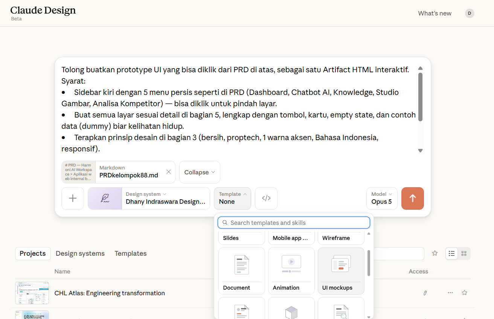
File PRD.md dilampirkan, lalu satu prompt: buat prototype yang bisa diklik, lima menu persis seperti di PRD.
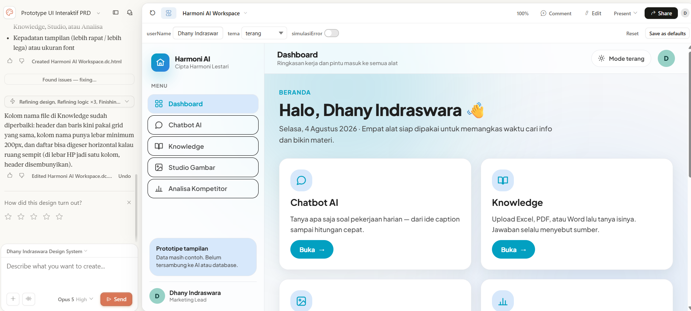
Sidebar lima menu, dashboard, kartu tiap alat — masih data contoh, tapi sudah bisa diklik dan direvisi sambil dilihat.
Prototype ini murni tampilan — belum tersambung ke AI maupun database, dan memang tidak perlu. Fungsinya menyepakati bentuk sebelum ada kode yang ditulis, supaya tidak ada tiga versi layar yang sama di sore hari.
Langkah · Transfer
Pindahkan hasil design ke Claude Code
- 1 · Dari hasil design, pilih transfer — lanjutkan pekerjaannya di Claude Code. Prototype-nya ikut terbawa, tanpa salin-tempel manual.
- 2 · Reponya sudah terpilih sejak langkah 03. Yang perlu dipastikan cuma satu: sesi Claude Code ini menunjuk ke repo kelompok kita, bukan repo contoh.
- 3 · Periksa nama repo dan branch di sesi Claude Code sebelum mengetik apa pun. Salah repo di sini, sore nanti kita bingung nyari sendiri hasil kerja kita ke mana.
- 4 · Minta commit pertama: struktur project, PRD.md, dan hasil design masuk ke repo.
- 5 · Buka github.com dan pastikan filenya ada. Kalau belum ada, jangan lanjut ke langkah 07.
Karena Vercel sudah tersambung di langkah 04, commit ini bukan cuma masuk repo — dalam satu menit alamat kelompok kita berubah isinya. Buka dari HP dan buktikan.
Setelah commit ini, repo sudah berisi rencana dan tampilannya. Langkah 07 tinggal menghidupkan isinya.
Album · Layar nyata · Langkah 06
Menyerahkan design ke yang membangun
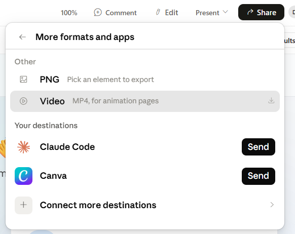
Dari Claude Design, tujuan ekspornya langsung tersedia: Claude Code.
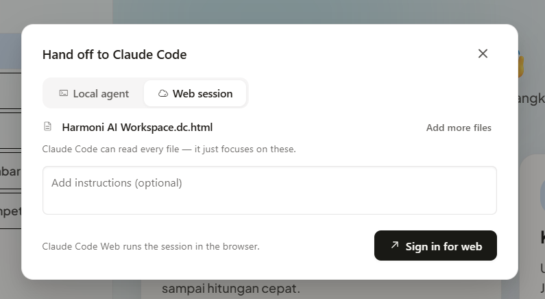
Pilih Web session — sesinya jalan di browser. Tidak ada yang dipasang di laptop.
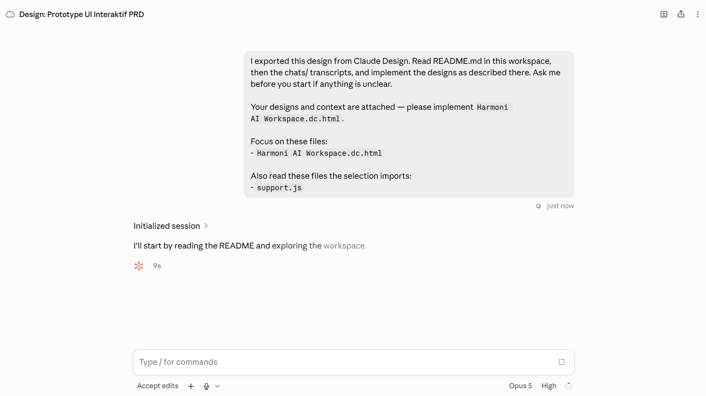
Design dan catatannya ikut terkirim. Claude Code membaca dulu isinya sebelum menulis apa pun.
PRD → Design → Claude Code → GitHub → Vercel. Tidak ada berkas yang dikirim lewat chat, tidak ada zip yang diunduh, dan tidak ada yang disalin manual antar aplikasi.
Langkah · Database & Storage
Dua klik, tanpa satu pun password diketik
- 1 · Tab Storage → Create → Postgres. Region terdekat: Singapore.
- 2 · Ulangi untuk Blob. Gudang buat file: PDF, foto, lampiran.
- 3 · Kunci sambungannya ditempel Vercel sendiri sebagai environment variable — setelan rahasia milik project. Tidak ada yang disalin, tidak ada yang bisa salah ketik.
- 4 · Redeploy sekali supaya setelan barunya kebaca.
- 5 · Buktikan lewat /api/health. Dua-duanya ok dulu, baru bikin schema.
ANTHROPIC_API_KEY dari lembar ACCESS, ditempel di Settings → Environment Variables — di Vercel, tidak pernah di dalam repo. Kunci ini yang menghidupkan langkah 09.
"Sambungkan app ini ke Vercel Postgres lewat POSTGRES_URL dan Vercel Blob lewat BLOB_READ_WRITE_TOKEN. Buat GET /api/health yang mengetes SELECT 1 dan sekali list blob."
Album · Layar nyata · Langkah 07
Menyalakan database tanpa mengetik kredensial
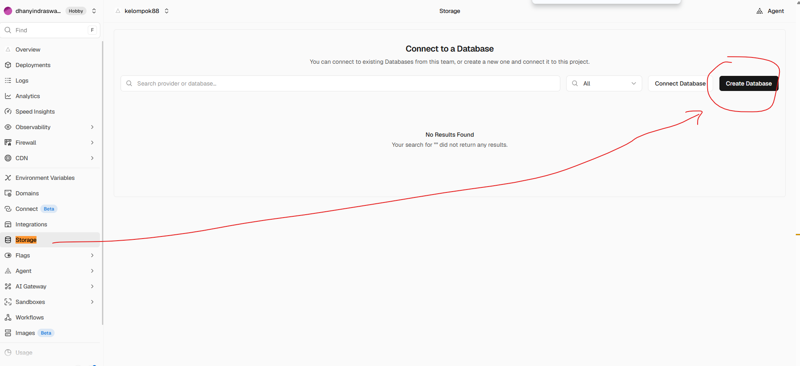
Di dalam project, buka tab Storage → tombol Create Database di kanan atas.
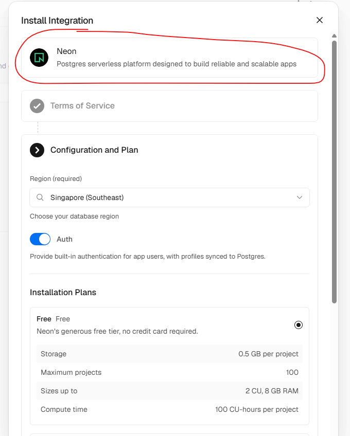
Postgres di Vercel disediakan lewat Neon. Region Singapore, plan Free — tanpa kartu kredit.
Karena databasenya Neon, variabel yang ditempelkan adalah DATABASE_URL — bukan POSTGRES_URL. Sebutkan nama yang benar-benar ada ke Claude Code; menebak-nebak nama variabel itu salah satu macet yang paling sering kejadian.
Album · Layar nyata · Langkah 07
Satu pilihan yang tidak bisa ditarik kembali
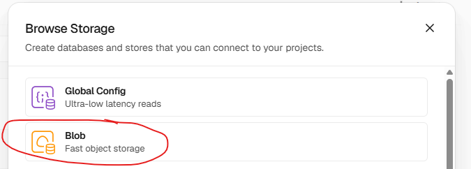
Di daftar penyimpanan, pilih Blob — Fast object storage. Ini gudang berkasnya.
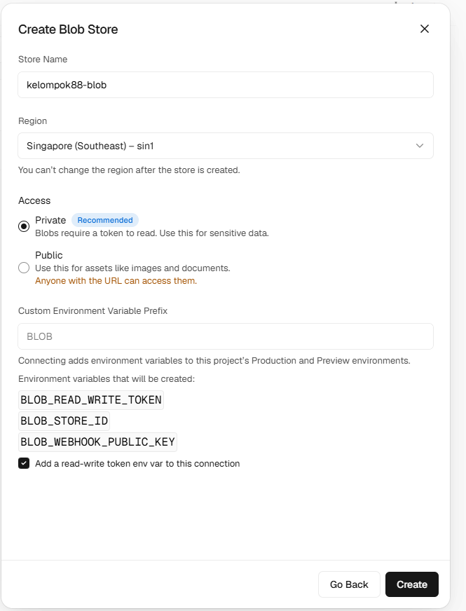
Access: Private (Recommended). Vercel menyarankan privat, dan aplikasi kita butuh Public. Salah pilih di layar ini = store harus dibuat ulang.
Gambar galeri dan dokumen ditampilkan langsung di layar lewat alamatnya. Layar ini sendiri sudah memberi tahu: "Use this for assets like images and documents." Sifat store ini dipilih sekali waktu dibuat dan tidak bisa diubah lagi — sama seperti pilihan regionnya.
Album · Layar nyata · Langkah 07
Satu kunci, ditempel sekali, di satu tempat
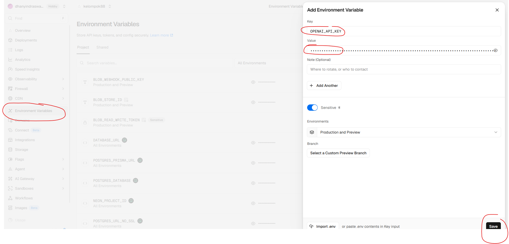
Project → Settings → Environment Variables → Add. Nilainya langsung tersembunyi, dan penanda Sensitive menyala sendiri.
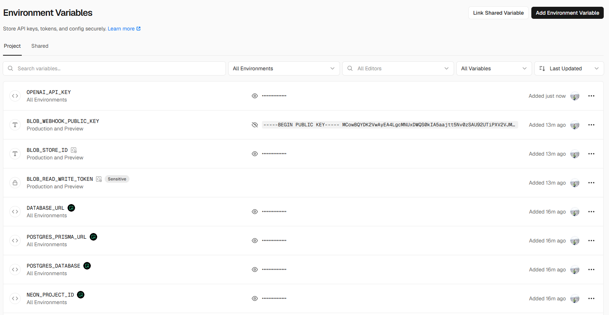
Hanya OPENAI_API_KEY yang kita tempel sendiri. Sisanya — Blob dan Neon — ditempelkan Vercel otomatis.
Dua layar ini bisa dipresentasikan tanpa risiko justru karena nilainya ter-mask. Aturannya: jangan pernah menekan tombol mata saat merekam, dan jangan pernah menyalin kunci ke catatan atau materi. Kunci yang sudah terlihat orang lain harus dicabut, bukan dijaga.
Praktik · Database & Storage
Baris di Postgres, file di Blob
- Jangan simpan file di dalam database. Yang masuk Postgres cuma alamat filenya, isinya biar di Blob. Database yang kegemukan file jadi lambat, dan itu tidak bisa dibetulkan belakangan.
- Tiap kelompok punya database sendiri. Satu project, satu Postgres, satu Blob — tidak ada yang saling menimpa.
- Tabelnya dibuat sesuai PRD, bukan sesuai yang kepikiran saat itu. Buka docs/PRD.md bagian data, minta Claude Code membuat tabelnya dari situ.
- Isi data contoh secukupnya — lima sampai sepuluh baris yang mirip data asli. Menu kosong tidak bisa diuji dan tidak bisa ditunjukkan.
Menu yang dibuat dengan data palsu harus dibongkar lagi nanti. Karena menyalakannya cuma dua klik, tidak ada alasan menunda.
- /api/health hijau untuk dua-duanya
- Tabel sudah ada dan berisi data contoh
- Satu file berhasil diunggah dan alamatnya tersimpan
Album · Layar nyata · Langkah 07
Bukti bahwa datanya benar-benar siap
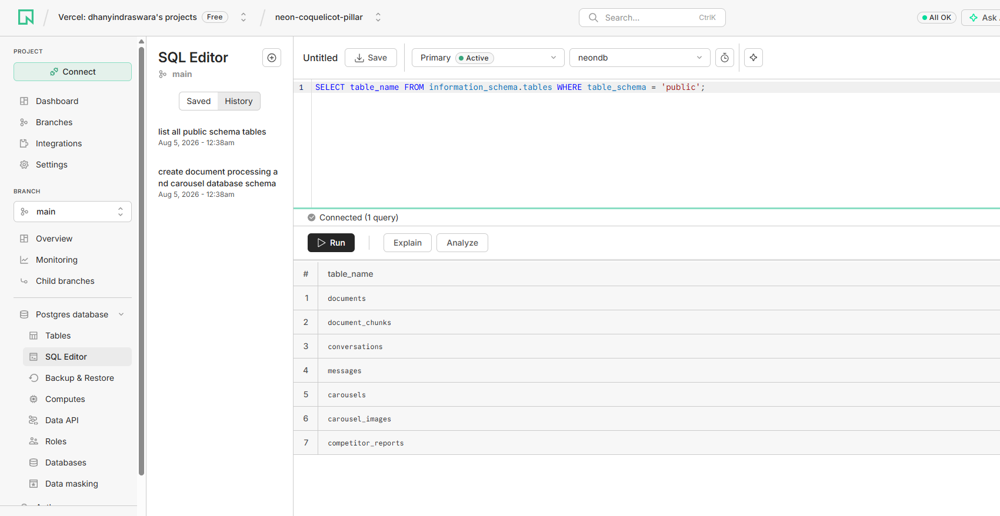
Hasil SELECT table_name … — tujuh baris, persis seperti yang diminta schema.sql.
- Kenapa layar ini penting. Database yang menyala belum tentu punya tabel. Sampai tujuh baris ini muncul, menu apa pun yang menyimpan data akan gagal — dan yang gagal bukan menunya.
- Jalannya: Vercel → Storage → klik database → Open in Neon → SQL Editor → tempel schema.sql → Run.
- Sekali saja, dan aman diulang karena setiap perintahnya memakai IF NOT EXISTS.
- Jangan lewatkan baris pertamanya: CREATE EXTENSION vector — itulah yang membuat menu Knowledge bisa mengingat isi dokumen.
Jalankan kueri ini sebelum mencoba menu mana pun. Sepuluh detik di sini menghemat setengah jam menebak-nebak kenapa unggahan gagal.
Langkah · Claude Code
Hidupkan menunya
- Menu hasil design sekarang masih kosong — cantik, tapi belum ada isinya. Hidupkan satu per satu, jangan borongan.
- Siapkan datanya lebih dulu: tabel sesuai PRD plus data contoh, biar menunya punya sesuatu buat ditampilkan.
- Satu menu dikerjakan sampai benar-benar bisa dibuka di browser, baru pindah ke menu berikutnya.
- Commit tiap satu menu jadi. Commit yang jalan itu titik pulang saat percobaan berikutnya gagal.
- Kalau ngadat, tempel pesan errornya utuh. Jangan pernah menceritakan ulang isi error.
Ini tahap di mana layar baru masih murah. Kalau ada yang melihat celah sekarang, tambahkan — memang itu gunanya keluar dari Design lebih awal.
- 1 · Kerangka — bikin project Next.js-nya, sambungkan ke Postgres dan Blob yang sudah dinyalakan di langkah 07.
- 2 · Tabel — bikin tabelnya sesuai PRD, isi data contoh yang kelihatan di layar.
- 3 · Jalur baca — halaman daftar dan halaman detail. Buktikan dulu datanya benar-benar keluar.
- 4 · Jalur tulis — form isian, upload file, dan pengecekan isinya.
- 5 · RAG — dikerjakan di langkah 09, setelah datanya benar-benar mengalir.
- 6 · Chatbot — juga di langkah 09, pakai mesin pencarian yang sama.
- 7 · Menu bebas — tantangan kita, dikerjakan setelah semua menu wajib jalan.
Album · Layar nyata · Langkah 08
Ditanya dulu, baru dibangun
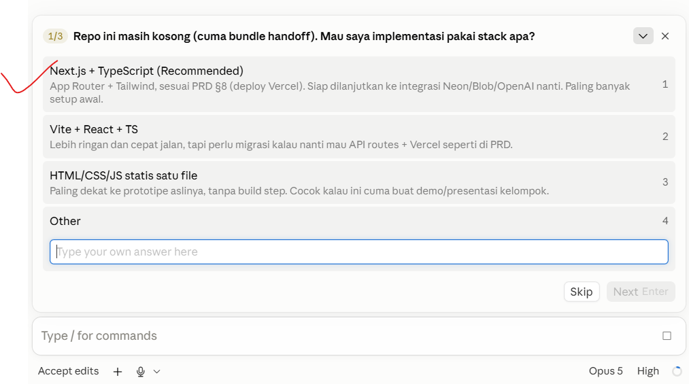
"Repo ini masih kosong. Mau saya implementasi pakai stack apa?" — pilih Next.js, sesuai PRD.
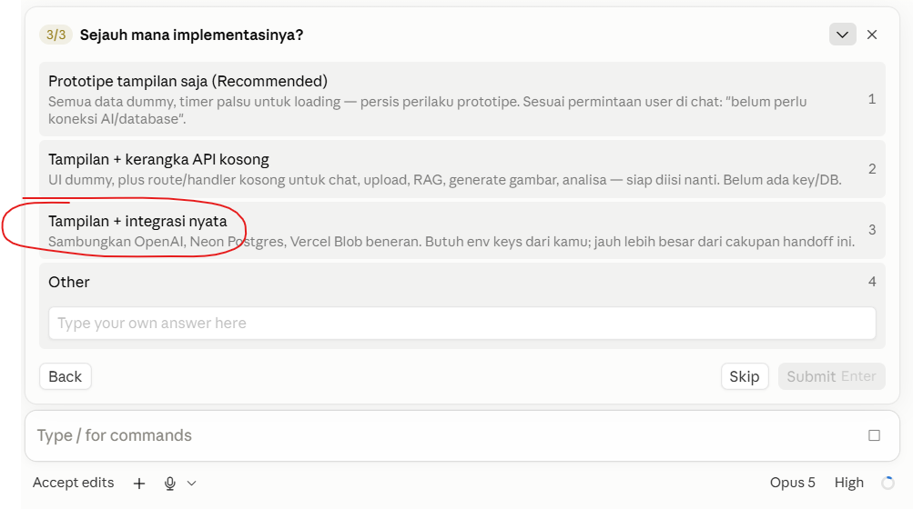
Tampilan saja, kerangka kosong, atau integrasi nyata? Menjawab di sini menghemat setengah hari.
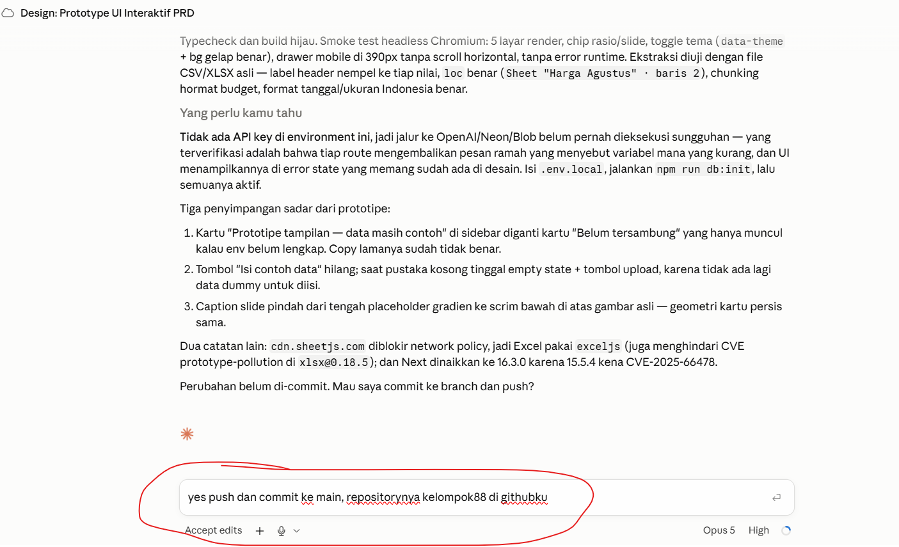
Selesai membangun, dia melaporkan apa yang diuji dan apa yang belum — lalu minta izin sebelum commit dan push.
Perhatikan layar ketiga: dia menyebut sendiri apa yang belum terbukti — "tidak ada API key di environment ini, jadi jalur ke OpenAI belum pernah dieksekusi sungguhan". Laporan yang menyebutkan batasnya jauh lebih berguna daripada laporan yang serba hijau.
Langkah · Integrasi AI
Sambungkan menu ke AI + database
- RAG — dokumen kita dijawab dengan sumbernya. Tanpa sumber, tidak ada kepercayaan.
- Chatbot — pencarian yang sama, dibungkus percakapan, lengkap dengan riwayat.
- Gambar → OpenAI — bikin dan baca gambar kita lempar ke OpenAI, karena di situ kekuatannya.
- Semua kunci disimpan di sisi server. Kunci yang ikut ke kode browser sama saja dengan kunci yang ditempel di papan pengumuman.
Cukup satu baris setelan yang menentukan pakai penyedia yang mana. Kalau harganya berubah kuartal depan, yang kita ganti satu baris itu — bukan seluruh aplikasi.
- 1 · Upload → file masuk Blob, row-nya masuk Postgres
- 2 · Extract → tarik teks keluar dari PDF
- 3 · Chunk → dipotong 500–1.000 token, ujungnya sedikit tumpang tindih
- 4 · Embed → tiap chunk diubah jadi vektor
- 5 · Store → simpan vektor + link balik ke sumbernya
- 6 · Retrieve → pertanyaan masuk, chunk paling cocok keluar
- 7 · Answer → chunk + pertanyaan ke model, keluar jawaban bersumber
Langkah 09 · Visual
Perjalanan satu dokumen, dari upload sampai jawaban.
Potongan dokumen yang asal-asalan tidak bisa ditolong model yang lebih pintar. Kalau jawabannya sering meleset, periksa langkah 3 dulu — jangan langsung naikkan modelnya.
Langkah · Uji
Uji menunya satu per satu
| Menu | Cara mengujinya | Lulus kalau |
|---|---|---|
| Login & akses | Masuk pakai akun asli, lalu keluar lagi. | Yang belum login tidak bisa membuka halaman dalam. |
| Daftar data | Buka di laptop dan di HP. | Isinya sama dengan yang ada di database. |
| Tambah & upload | Upload satu dokumen asli, bukan file contoh. | File masuk storage, barisnya muncul di daftar. |
| Tanya dokumen | Ajukan 5 pertanyaan yang jawabannya kita tahu. | 4 dari 5 benar dan menyebut sumbernya. |
| Chatbot | Tanya beruntun, termasuk pertanyaan susulan. | Nyambung dengan pertanyaan sebelumnya. |
| Menu bebas | Diuji orang yang tidak ikut membangunnya. | Selesai dipakai tanpa dijelaskan lebih dulu. |
Masih ada menu yang cuma jalan di laptop pembuatnya. Itu bukan selesai — itu kebetulan.
- Yang menguji bukan yang membangun. Tukar laptop antar anggota, sepuluh menit saja.
- Catat temuan jadi daftar bernomor, jangan dibetulkan sambil menguji.
- Perbaiki yang merah, commit, uji ulang menu itu saja — bukan semuanya dari awal.
- Uji jalur salahnya juga: kolom kosong, file bukan PDF, koneksi putus saat upload.
- Semua hijau? Commit terakhir, push, tulis pemiliknya di README.
Bekal praktis
Delapan halaman yang dibuka saat macet.
Cara menyuruh
Anatomi prompt, prompt pembuka, prompt per menu, dan prompt saat semuanya merah.
Kendali harian
Perintah yang dipakai seharian di Claude Code, plus lingkaran kerja 15 menitan.
Jaga hasilnya
Commit sebagai titik pulang, dan isi repository yang tidak bikin malu bulan depan.
Sebelum mulai
Tujuh baris yang harus hijau sebelum menulis fitur pertama.
Sepuluh langkah tadi urutan kerjanya. Delapan halaman berikut ini isinya — dibuka kalau ada yang mentok, tidak perlu dihafal.
Bekal · Prompt
Lima bagian prompt yang baik
Bekal · Pesan pertama
Membuka project dari PRD
Karena rencana salah yang ketahuan dalam 30 detik jauh lebih murah daripada 300 baris kode salah yang ketahuan satu jam kemudian. Baca rencananya, koreksi, baru bilang lanjut.
Bekal · Membangun
Satu layar dalam satu waktu
Ganti tiga hal saja tiap kali: nama layar, sumber datanya, dan apa yang tampil. Sisanya biarkan sama persis — termasuk kalimat terakhirnya.
Bekal · Saat ngadat
Tempel errornya, jangan diceritakan
Menulis "errornya merah, katanya ada yang undefined". Pesan error itu berisi nama file dan nomor baris — itulah yang membuat perbaikan jadi 30 detik, bukan 30 menit. Blok, salin, tempel utuh.
Bekal · Kendali
Perintah yang dipakai seharian
| Yang dilakukan | Gunanya |
|---|---|
| claude.ai/code | Titik mulai setiap hari. Bookmark di browser, tidak perlu yang lain. |
| Pilih repo & branch | Tiap sesi nempel ke satu repo dan satu cabang. Pastikan sudah benar sebelum mulai. |
| /init | Bikin CLAUDE.md — catatan aturan project supaya diingat di sesi berikutnya. |
| /clear | Mulai obrolan dari nol kalau arahnya sudah melenceng jauh. Kodenya tidak ikut terhapus. |
| Mode rencana | Claude menyusun langkahnya dulu dan belum menyentuh file apa pun. Dipakai buat tugas besar. |
| Tombol stop | Hentikan saat arahnya salah. Jangan ditunggu sampai selesai. |
Kalau satu putaran sudah lewat 40 menit, berarti tugasnya kebesaran. Pecah jadi dua, ulangi dari atas.
Bekal · Kebiasaan
Commit = save point
Sebelum push pertama, buka .gitignore dan pastikan ada baris .env. Kunci yang sudah terlanjur ter-push tetap tersimpan di riwayat, walaupun nanti dihapus.
Kapan commit? Setiap satu layar berhasil dibuka di browser. Bukan setiap satu jam, bukan sekali di akhir hari. Commit yang jalan itu tempat kita pulang saat percobaan berikutnya gagal.
Bekal · GitHub
Isi repository yang rapi
- Satu repository per tim, dibuat di jam pertama — bukan jam 16.45 saat semua sudah lelah.
- Repo privat, di bawah organisasi CHL, dan minimal dua orang punya akses.
- Commit sesering mungkin. Claude Code bisa commit untuk kita — biarkan saja.
- README yang menjelaskan ini apa, cara menjalankannya, dan siapa pemiliknya. Tiga paragraf cukup.
Tidak ada kunci rahasia di dalam repository. API key masuk ke .env, dan .env masuk ke .gitignore. Periksa ini sebelum push pertama, bukan sesudahnya.
Masukkan PRD ke dalam repo. Enam bulan lagi, itu satu-satunya yang bisa menjelaskan kenapa kodenya berbentuk seperti itu.
Bekal · Sebelum menulis fitur pertama
Tujuh baris ini harus hijau dulu.
Berhenti di situ, panggil fasilitator. Membangun fitur di atas persiapan yang setengah jadi itu cara tercepat membuang satu jam pertama.
Bengkel · Yang benar-benar terjadi
Satu sesi, empat menu, delapan kali macet
- Aplikasinya nyata. Empat menu — Chatbot, Knowledge, Studio Gambar, Analisa Kompetitor — dibangun dalam satu sesi, seluruhnya lewat browser.
- Tidak ada satu baris pun yang diketik manual oleh yang punya masalah. Semua kode ditulis Claude Code, di-commit, dan di-push sendiri.
- Yang memakan waktu bukan menulis fiturnya — melainkan delapan macet di sekitarnya: setelan Vercel, nama kolom database, sifat penyimpanan file.
- Semua macetnya sudah terpetakan di halaman-halaman berikut. Kalau kelompokmu menemuinya hari ini, jawabannya sudah ada, tinggal dibuka.
Membangun fiturnya justru bagian yang paling lancar. Yang menghabiskan waktu adalah sambungan antar layanan — dan hampir semuanya cuma butuh satu setelan yang benar, bukan menulis ulang kodenya.
Karena itu urutannya dikunciLangkah 01–07 mengurus semua sambungan sebelum fitur pertama ditulis. Setiap macet yang dibereskan pagi hari adalah macet yang tidak muncul jam empat sore.
Bengkel · Dibuka waktu layar merah
Cari gejalanya, langsung ke obatnya
| Yang muncul di layar | Penyebab sebenarnya | Obatnya |
|---|---|---|
| …does not contain the requested branch or commit reference | Repo benar-benar kosong. Vercel tidak punya apa pun untuk dibangun. | Isi satu file README.md, lalu import ulang. |
| No Output Directory named "public" found | Waktu repo masih kosong, Vercel menebak ini situs biasa — dan tebakan itu tidak diperbarui sendiri. | Framework Preset → Next.js, atau tambahkan vercel.json. |
| A more recent Production Deployment has been created… | Bukan error. Kita sedang membuka deployment lama yang sudah tergantikan. | Lihat baris paling atas di tab Deployments. |
| Tidak menemukan Environment Variables | Tersasar ke halaman AI Gateway — itu produk lain, bukan setelan project. | Project → Settings → Environment Variables. |
| relation "documents" does not exist | Database sudah menyala, tapi tabelnya belum pernah dibuat. | Jalankan schema sekali di Neon SQL Editor. |
| Cannot use public access on a private store | Blob dibuat sebagai privat. Sifat itu dipilih saat pembuatan dan tidak bisa diubah. | Buat store baru yang Public, sambungkan, redeploy. |
| Jawaban AI ngawir soal data internal | Chatbot belum dihubungkan ke dokumen yang sudah diunggah. | Sambungkan chatbot ke pencarian dokumen (RAG). |
| Jawaban penuh tanda bintang | Model menulis pakai format Markdown, sementara layar kita menampilkannya mentah-mentah. | Larang Markdown lewat system prompt-nya. |
Tujuh dari delapan macet di atas bukan kesalahan kode. Semuanya soal setelan layanan atau kalimat perintah. Refleks pertama kita — "berarti kodenya salah" — hampir selalu keliru, dan justru itu yang membuang waktu paling banyak.
Bengkel · Deploy
Dua kegagalan build yang pasti muncul
- Artinya: repo dibuat tanpa mencentang Add a README file, jadi benar-benar nol berkas.
- Obatnya: di halaman repo GitHub, klik creating a new file → beri nama README.md → Commit changes. Lalu import ulang di Vercel.
Simpan sebagai vercel.json di akar repo. Setelan ini ikut di dalam kode, jadi tidak hilang waktu project dibuat ulang atau dipindah ke akun perusahaan.
- Artinya: waktu project dibuat, repo masih berisi README saja — Vercel menyimpulkan ini situs biasa, jadi dia nyari folder public. Setelah repo berisi Next.js, tebakan lama itu tidak diperbarui sendiri.
- Obatnya: Settings → Build and Deployment → Framework Preset → Next.js. Pastikan Output Directory dikosongkan, bukan diisi public.
Buat repo dengan README sejak awal, dan sambungkan Vercel setelah kerangka aplikasi masuk — bukan saat repo masih kosong. Kalau terlanjur, dua obat di atas menyelesaikannya dalam satu menit tanpa menyentuh kode.
Bengkel · Vercel
Membaca deployment & menaruh kunci
Ini bukan kegagalan. Artinya kita sedang membuka deployment lama yang sudah digantikan yang lebih baru.
- Tab Deployments tersusun dari yang terbaru di atas. Selalu baca baris paling atas.
- Baris berlabel Production biru itulah yang sedang dilihat pengunjung.
- Baris merah di bawahnya adalah sejarah, bukan masalah yang masih hidup.
AI Gateway di sidebar Vercel adalah produk lain — bukan setelan project kita. Jalur yang benar: buka project → Settings → Environment Variables. Jalan pintas: tambahkan /settings/environment-variables di belakang alamat project.
| Kunci | Dari mana |
|---|---|
| DATABASE_URL | Ditempel Neon sendiri waktu database disambungkan. |
| BLOB_READ_WRITE_TOKEN | Ditempel Vercel sendiri waktu Blob disambungkan. |
| OPENAI_API_KEY | Satu-satunya yang kita tempel sendiri, sekali. |
- Namanya belum tentu POSTGRES_URL. Kalau databasenya Neon, yang tersedia adalah DATABASE_URL. Kode harus memanggil nama yang benar-benar ada — sebutkan nama itu ke Claude Code, jangan diasumsikan.
- Kunci baru tidak terbaca sampai di-redeploy. Menambah setelan saja belum cukup — versi yang sedang tayang masih memakai nilai yang lama.
Bengkel · Data
Database menyala bukan berarti siap
- Gejalanya: menu terbuka rapi, tapi begitu menyimpan sesuatu muncul relation "documents" does not exist — atau daftarnya kosong terus tanpa alasan.
- Sebabnya: membuat database di tab Storage hanya menyediakan wadahnya. Tabelnya belum ada sampai kita menjalankannya sekali.
- Obatnya: Vercel → Storage → klik database → Open in Neon → SQL Editor → tempel isi schema.sql dari repo → Run.
- Aman diulang. Perintahnya memakai IF NOT EXISTS, jadi menjalankan dua kali tidak merusak apa pun.
Baris pertama CREATE EXTENSION IF NOT EXISTS vector; wajib jalan. Itulah yang membuat database bisa menyimpan "ingatan" dokumen. Tanpa itu, menu Knowledge tidak akan pernah bisa menjawab.
Jalankan setelah schema. Harus muncul tujuh baris:
Tujuh baris ini gerbangnya. Sebelum semuanya muncul, jangan buang waktu menguji menu — yang gagal bukan menunya.
Bengkel · Penyimpanan berkas
Sifat yang dipilih sekali, selamanya
Muncul tepat saat tombol Upload dokumen ditekan. Kodenya benar — aplikasi memang perlu menyimpan berkas sebagai publik supaya gambar dan dokumen bisa ditampilkan lewat alamatnya.
Sifat publik atau privat ditentukan saat store dibuat dan tidak bisa diubah sesudahnya. Tidak ada tombol untuk memindahkannya. Satu-satunya jalan adalah membuat store baru.
- 1 · Periksa dulu isinya. Kalau store lama sudah menyimpan berkas yang dipakai, jangan dihapus — pindahkan dulu. Dalam kasus kami upload memang belum pernah berhasil, jadi tidak ada yang hilang.
- 2 · Hapus store lama dari Storage → pilih store → Settings → Delete Store. Token lamanya ikut tercabut.
- 3 · Buat store baru, dan saat ditanya Access pilih Public.
- 4 · Sambungkan ke project, centang semua environment — Production, Preview, dan Development.
- 5 · Redeploy sekali supaya token barunya terbaca.
Public — untuk yang memang ditampilkan di layar: gambar galeri, lampiran yang dibuka pengguna. Private — untuk berkas yang tidak boleh terbuka lewat tautan. Untuk aplikasi hari ini, publik yang dipakai.
Bengkel · Mutu jawaban
Chatbot pintar yang tidak tahu apa-apa
- Gejalanya: dokumen sudah diunggah di menu Knowledge, tapi Chatbot tetap menjawab ngawir waktu ditanya isinya — dengan sangat percaya diri.
- Sebabnya: Chatbot dan Knowledge adalah dua pintu terpisah. Chatbot tidak otomatis membaca pustaka dokumen; dia cuma bermodal pengetahuan umum.
- Obatnya: sebelum menjawab, pertanyaannya dipakai buat mencari potongan dokumen yang paling nyambung — potongan itu yang jadi bahan jawabannya.
- Hasilnya: pertanyaan soal data internal dijawab dari dokumen; kalau memang tidak ada di sana, dia bilang terus terang, bukan mengarang.
"Sambungkan Chatbot ke dokumen di menu Knowledge. Sebelum menjawab, cari potongan dokumen yang relevan dan pakai sebagai bahan. Kalau tidak ada di dokumen, katakan terus terang — jangan mengarang."
Jawaban tampil penuh **tebal** dan * karena model menulis Markdown, sementara layar menampilkannya apa adanya. Diperbaiki di kalimat perintah, bukan di tampilan:
Dua keluhan yang terdengar seperti "AI-nya jelek" ternyata dua kalimat perintah yang kurang. Sebelum menyalahkan modelnya, periksa dulu apa yang kita suruh dan bahan apa yang kita beri.
Bengkel · Keamanan
Kunci yang pernah terlihat adalah kunci mati
- Cara paling umum bocornya bukan diretas — melainkan tersalin ke catatan, tertangkap screenshot, atau ikut tertempel di materi presentasi.
- Tagihannya ikut kita. Siapa pun yang melihat kunci itu bisa memakainya, dan pemakaiannya masuk ke akun kita tanpa peringatan.
- Kunci yang bocor tidak bisa "dijaga". Tidak ada cara menariknya kembali dari mata yang sudah melihat. Satu-satunya tindakan yang benar adalah mencabutnya.
- 1 · Buka daftar API key penyedia → Revoke kunci yang bocor. Detik itu juga kuncinya mati.
- 2 · Buat kunci baru.
- 3 · Ganti nilainya di Vercel → Environment Variables.
- 4 · Redeploy sekali supaya kunci barunya terbaca.
| Kebiasaan | Kenapa |
|---|---|
| .env* masuk .gitignore | Diperiksa sebelum commit pertama, bukan sesudah ketahuan. |
| Kunci hanya hidup di Vercel | Tidak pernah di dalam repo, tidak pernah di dalam kode. |
| Sensor sebelum screenshot | Layar Environment Variables menyembunyikan nilainya sendiri — manfaatkan itu, jangan buka tombol matanya waktu merekam. |
| Satu kunci per kelompok | Kalau harus dicabut, yang terganggu hanya satu kelompok. |
Kunci OpenAI ikut tersalin utuh ke dokumen dokumentasi yang rencananya dibagikan ke peserta. Ketahuan saat dokumen itu dibaca ulang — dan langsung dicabut. Aturannya sederhana: kunci yang sudah keluar layar sendiri, anggap sudah bocor.
Bengkel · Cara memperbaiki
Lapor, tunggu hijau, baru uji lagi
| Laporan yang lemah | Laporan yang langsung dikerjakan |
|---|---|
| "Uploadnya error." | "Menu Knowledge, klik Upload dokumen, muncul: Cannot use public access on a private store." |
| "Deploynya gagal terus." | "Build Log baris terakhir: No Output Directory named "public" found." |
| "Jawabannya aneh." | "Saya tanya harga Cluster Melati yang ada di dokumen; jawabannya angka lain yang tidak ada di sana." |
Menguji ulang sebelum deployment selesai — lalu menyimpulkan perbaikannya gagal, padahal yang dibuka masih versi lama.
- Claude push ≠ aplikasi berubah. Ada jeda satu sampai dua menit untuk Vercel membangun ulang.
- Tunggu baris teratas berstatus Ready di tab Deployments, baru buka aplikasinya.
- Refresh keras (Ctrl/Cmd + Shift + R) supaya browser tidak menyodorkan halaman lama.
- Masih sama? Baru laporkan lagi — sekarang informasinya benar-benar baru.
Aturan yang menembus semua langkah
Satu set alat yang sama dari pagi sampai sore. Disebut sekali, lalu diulang terus.
Ditulis
"Next.js di Vercel, Postgres, Blob." Satu kalimat di bagian batasan.
Diulang
Supaya prototypenya bisa dibangun di stack itu, bukan jadi jalan buntu yang cantik.
Diulang lagi
Di pesan pertama tiap sesi. Setiap sesi.
Tidak melenceng
Sepuluh langkah, satu bentuk. Tidak ada yang perlu diterjemahkan di sambungannya.
Kalau dibiarkan bebas, model dengan senang hati bikin tampilan pakai React, mesinnya pakai FastAPI, dan databasenya Postgres — semuanya bagus, tapi bahasanya beda-beda, dan sekarang tim kita merawat tiga barang, bukan satu. Aturan ini bukan soal framework mana yang terbaik. Ini soal jumlahnya harus tepat satu.
Belajar dari pengalaman tim lain
Lima cara tim kehilangan hari ini.
| Kegagalannya | Bentuknya | Obatnya |
|---|---|---|
| Cakupannya melar jam 14.00 | "Mumpung lagi bikin, sekalian bisa buat payroll juga tidak?" | Catat di daftar tunggu. Bangun di putaran berikutnya, bukan hari ini. |
| Tidak commit sampai sore | Ada yang rusak jam 16.00 dan tidak ada titik untuk kembali. | Commit tiap kali satu layar berhasil. Tidak bisa ditawar. |
| Error diceritakan ulang | "Katanya sih ada masalah type error gitu." | Tempel errornya utuh. Setiap hurufnya. |
| Mendesain sambil ngoding | Tiga orang membangun layar yang sama dengan tiga versi berbeda. | Balik ke Design sepuluh menit. Sepakati. Lanjut lagi. |
| Tidak ada yang pegang Senin | Demonya bagus. Laptop ditutup. Aplikasinya tidak pernah menyala lagi. | Pemilik bernama jelas, tanggal jelas, sebelum semua pulang. |
Hari ini Claude pasti akan salah dengan percaya diri. Itu wajar, dan justru itu sebabnya kita yang jadi pemeriksa. Baca dulu apa yang dia tulis sebelum kita jalankan — sama seperti kita membaca shop drawing subkontraktor sebelum cor dimulai.
Apa yang terjadi setelah ini
Dua minggu yang menentukan hari ini berarti atau tidak.
Akun & akses
Ajukan akun Vercel perusahaan, domain, dan siapa yang memegang kuncinya. Ini antrean yang tidak bisa dipercepat, jadi masuklah paling awal.
Pindahkan
Pindahkan project ke akun perusahaan. Masukkan data asli. Atur backup database, lalu uji sekali pemulihannya.
Lima pengguna asli
Bukan tim pembangun. Lima orang dari departemen yang masalahnya kita selesaikan. Perhatikan mereka, jangan dibantu.
Putuskan
Lanjutkan, kembangkan, atau hentikan — secara tertulis. Menghentikan dengan sadar itu hasil yang baik. Diam-diam menghilang, tidak.
Hari ke-15, satu jam, semua tim. Masing-masing menunjukkan sistem yang jalan dan satu angka: berapa waktu yang dihemat orang sungguhan di minggu kedua. Angka itu satu-satunya obrolan soal untung-rugi yang layak dibahas.
Bawa pulang lima hal ini
Kalau isi hari ini memudar, ini yang harus tersisa.
- Pilih fitur dulu, baru model. Memilih di mana kita bekerja lebih berpengaruh daripada memilih mesin mana yang berpikir.
- Mulai murah, naik kalau ada buktinya. Sonnet sebagai bawaan; pindah ke Opus saat kita bisa menyebut kenapa gagalnya.
- PRD itu produknya. Semua tahap sesudahnya cuma terjemahan dari dokumen itu. PRD lemah, semuanya ikut lemah.
- Satu stack, dari awal sampai akhir. Ditulis di PRD, diulang di Design, diulang lagi di Code.
- Pegang data kita, dan pegang tanggalnya. Postgres dan Blob — dipindah ke akun perusahaan dalam empat belas hari, dengan satu nama yang bertanggung jawab.
Sekian teorinya
Sekarang buka
laptop kita.
Langkah 01 dimulai sekarang: login, repo, sambungkan. Setelah itu empat puluh lima menit untuk PRD. Satu masalah nyata dari departemen kita sendiri.
Cipta Harmoni Lestari · Bangun Aplikasi Integrasi AI dengan Claude · 2026